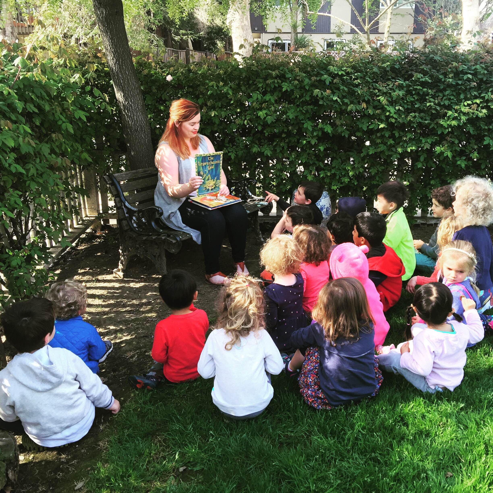

Highland Montessori is small preschool located in a quiet residential area in north San Mateo near the Burlingame border. We are licensed for 20 children and accept ages 3 - 5 years old (younger children may be accepted if they demonstrate developmental readiness). Our doors have been open since 1982 when Cecilia Boland-Walsh first opened the school. Since our school takes place in a home setting, our environment is very unique. We are able to provide our students with the perfect blend of a nurturing home setting and a stimulating educational environment.
Our staff is passionate and dedicated to the philosophy of Dr. Maria Montessori, we believe that “within every child is the person they are to become”. Our school is much more successful when our teachers take a progressive approach to their own continued learning. We are part of the Bay Area Montessori Association, and our staff is required to attend Montessori workshops and child development seminars to expand our knowledge of education in the modern world.
The prepared environment of our Montessori program gives the child the opportunity and the freedom to achieve their potential. Using specially constructed hands-on manipulative materials, the Highland Montessori Curriculum covers several academic areas that are developmentally appropriate. Within a context of self-motivation and self-discipline, children are presented activities in the following major curriculum areas: practical life, sensorial, math, language, science and geography, music and movement, and art.
Our activities and routines are planned with a child’s sensitive periods and internal drives in mind, and are designed with internal controls of error so the need for adult correction becomes minimal. This allows the children to develop at their own pace; allowing them to develop concentration, self-discipline, self-motivation and self-confidence.
